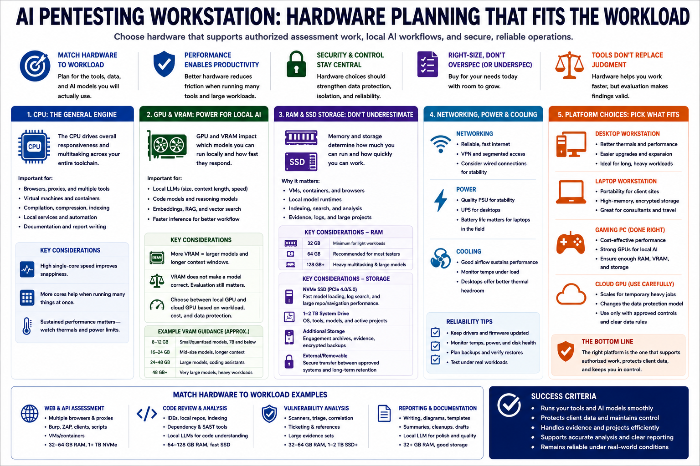

Hardware Planning
Connecting to LMS... Progress: in progress

Narration
Hardware planning should match the expected workload. The CPU still matters for general responsiveness, virtualization, compilation, compression, indexing, and running multiple tools at once. A fast processor with enough cores helps when the workstation is running browsers, proxies, virtual machines, local services, analysis tools, and documentation applications at the same time.
GPU and VRAM matter for local AI workflows. Larger models, longer context windows, and faster inference usually require more video memory. A small quantized model may run acceptably on modest hardware, while larger coding or reasoning models may require a workstation-class GPU or a cloud GPU. VRAM does not make a model correct, and it does not replace evaluation, but it strongly affects what can run locally and how usable the experience feels.
System RAM and SSD storage are easy to underestimate. Virtual machines, containers, browser sessions, local model runtimes, indexing services, and analysis tools all consume memory. Fast SSDs help with model loading, evidence storage, log search, and large project navigation. External storage may be needed for engagement archives, encrypted backups, or moving evidence between approved systems.
Networking, power, and cooling are part of reliability. A desktop may provide better thermals and expansion. A laptop may provide portability for field or client-site work. A gaming PC can be a cost-effective local AI workstation if it has enough RAM, storage, and GPU memory. A cloud GPU can make sense for temporary heavy workloads, but it changes the data protection model. The right hardware is the one that supports authorized work without weakening security or control.